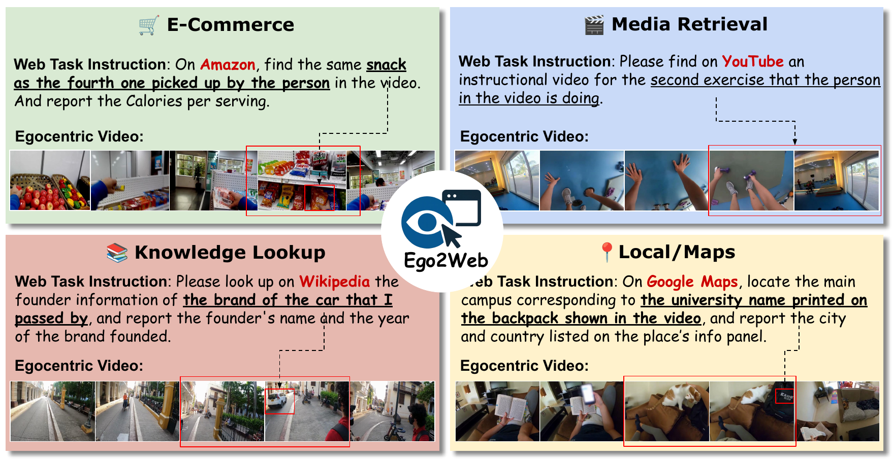
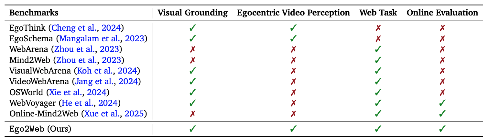
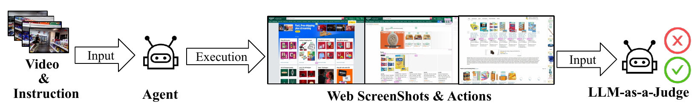
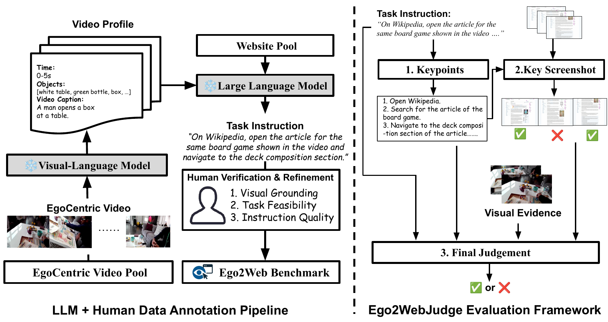
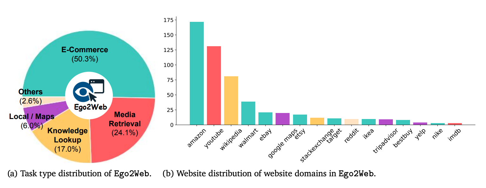
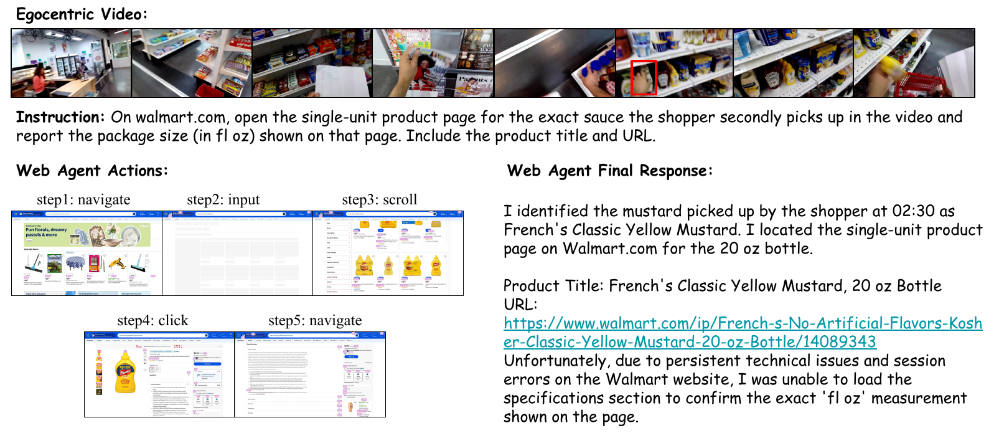

Ego2Web is a new multimodal agent benchmark that bridges real-world video perception and online action. Instead of relying on text or screenshots, agents must ground fine-grained evidence from egocentric videos—such as objects, brands, or actions—and use it to complete downstream web tasks. The benchmark spans diverse workflows across E-Commerce, Media Retrieval, Knowledge Lookup, and Local/Maps. Tasks require visual understanding like identifying a specific snack, an exercise step, a car brand, or a university name—demanding strong temporal reasoning, object grounding, and cross-modal transfer to web queries. Unlike existing benchmarks, Ego2Web evaluates whether agents can correctly interpret the real visual world before acting online, not just execute browser actions.

Multimodal AI agents are increasingly automating complex real-world workflows that involve online web execution. However, current web-agent benchmarks suffer from a critical limitation: they focus entirely on web-based interaction and perception, lacking grounding in the user’s real-world physical surroundings. This limitation prevents evaluation in crucial scenarios, such as when an agent must use egocentric visual perception (e.g., via AR glasses) to recognize an object in the user’s surroundings and then complete a related task online (e.g., making a purchase). To address this gap, we introduce Ego2Web, the first benchmark designed to bridge egocentric video perception and web agent execution. Ego2Web pairs real- world first-person video recordings with web tasks that require visual understanding, web task planning, and interaction in an online environment for successful completion. We utilize an automatic data-generation pipeline combined with human verification and refinement to curate well-constructed, high-quality video- task pairs across diverse web task types, including e-commerce, navigation, media search, and so on. To facilitate a more accurate and scalable evaluation for our novel benchmark, we also develop a novel LLM-as-a-Judge automatic evaluation method, Ego2WebJudge, which achieves approximately 84% agreement with human judgment, substantially higher than existing evaluation methods. Experiments with diverse state-of-the-art agents show that their performance remains far from perfect, revealing a major performance gap. We also conduct a comprehensive ablation study on task design, highlighting the necessity of video perception in the proposed task and the limitations of current agents. We hope Ego2Web can be a critical new resource for developing truly capable AI assistants that can seamlessly see, understand, and act across the physical and digital worlds.


Ego2Web is the first benchmark that connects egocentric video perception with real-world web agent execution. We build the benchmark with a semi-automatic pipeline: first, a vision-language model parses first-person videos into structured clip-level captions and visual metadata; then, a large language model generates grounded web task instructions over active websites such as Amazon, YouTube, and Wikipedia; finally, human annotators verify and refine each example to ensure visual grounding, web feasibility, and instruction quality. This model-human pipeline produces diverse, high-quality video-task pairs that require agents to identify relevant evidence in the physical world and translate it into downstream digital actions.
To support scalable evaluation in live web environments, we further introduce Ego2WebJudge, an automatic LLM-as-a-Judge framework tailored for visually grounded web tasks. Given the task instruction, action trajectory, web screenshots, and annotated visual evidence from the egocentric video, Ego2WebJudge first extracts key success criteria, then selects the most relevant screenshots from the web trajectory, and finally determines whether the agent has completed the task correctly and consistently with the visual evidence from the real world. This enables reliable online evaluation for multimodal agents operating across both physical perception and web interaction.


We evaluate a diverse set of state-of-the-art web agents on Ego2Web. Despite strong capabilities in web interaction and vision-language tasks, all models exhibit substantial performance gaps, highlighting the difficulty of grounding real-world visual perception for downstream web execution.
| Evaluation | Base MLLM | Claude 3.7 | Claude 4.5 | GPT-5.4 | SeeAct | BU-GPT-4.1 | BU-Gemini-3-Flash |
|---|---|---|---|---|---|---|---|
| Ego2WebJudge | Qwen3-VL-Flash | 20.8 | 32.2 | 38.8 | 29.6 | 34.6 | 57.2 |
| Gemini-2.5 Pro | 17.8 | 24.8 | 23.6 | 25.2 | 34.6 | 48.2 | |
| GPT-4o | 19.4 | 27.2 | 26.8 | 26.8 | 47.6 | 51.4 | |
| Human Eval | -- | 26.4 | 32.8 | 30.6 | 34.2 | 44.4 | 58.6 |
| Domains / Agents | Claude 3.7 | Claude 4.5 | GPT 5.4 | SeeAct | BU-GPT-4.1 | BU-Gemini-3-Flash | Avg. SR |
|---|---|---|---|---|---|---|---|
| E-Commerce | 13.0 | 18.2 | 14.3 | 19.5 | 26.9 | 38.2 | 21.7 |
| Media Retrieval | 19.6 | 26.5 | 29.5 | 24.2 | 30.3 | 50.7 | 30.1 |
| Knowledge Lookup | 33.6 | 45.6 | 39.1 | 43.4 | 63.0 | 75.0 | 50.0 |
| Local / Maps | 6.4 | 12.9 | 29.0 | 19.3 | 22.5 | 48.3 | 23.1 |
| Others | 0.0 | 6.6 | 6.6 | 20.0 | 40.0 | 13.3 | 14.4 |
| Total | 17.8 | 24.8 | 23.6 | 25.2 | 34.6 | 48.2 | 29.0 |
We study the role of egocentric visual perception through controlled input ablations and further analyze the main failure modes of strong web agents on Ego2Web. The results show a clear hierarchy: no visual input < detailed caption < raw video. While structured captions help, they remain an imperfect proxy for true visual grounding.
| Raw Video | Detailed Caption | E-Commerce | Media Retrieval | Knowledge Lookup | Local / Maps | Others | Total |
|---|---|---|---|---|---|---|---|
| ✗ | ✗ | 2.6 | 7.5 | 5.4 | 3.2 | 0.0 | 4.4 |
| ✗ | ✓ | 13.0 | 29.5 | 39.1 | 38.7 | 6.6 | 23.6 |
| ✓ | ✗ | 38.2 | 50.7 | 75.0 | 48.3 | 13.3 | 48.2 |
Without any visual input, the agent performs extremely poorly, achieving only 4.4% SR, indicating that language-only signals are insufficient for visually grounded web tasks. Providing detailed captions improves performance to 23.6% SR, showing that textual summaries can partially capture semantic information. However, raw video input leads to a much stronger result of 48.2% SR, more than doubling the caption-based setting.
The improvement is consistent across all domains, with particularly large gains in Knowledge Lookup and Local / Maps, where fine-grained spatial and temporal cues are especially important.
We manually inspected 50 unsuccessful trajectories and identified several recurring failure modes:
A compositional failure occurs when errors in temporal grounding propagate to downstream web retrieval and verification. For example, the agent may incorrectly identify the second picked-up sauce in the video, navigate to a related Walmart product page, yet still fail to verify the required package-size attribute. This illustrates that solving Ego2Web requires not only accurate visual perception, but also precise temporal reasoning and robust cross-modal alignment between video evidence and web content.

@article{yu2026ego2web,
title={Ego2Web: Benchmarking Web Agents with Egocentric Video Grounding},
author={Yu, Shoubin and Shu, Lei and Yang, Antoine and Fu, Yao and
Sunkara, Srinivas and Wang, Maria and Chen, Jindong and
Bansal, Mohit and Gong, Boqing},
journal={Proceedings of the IEEE/CVF Conference on Computer Vision and Pattern Recognition (CVPR)},
year={2026}
}